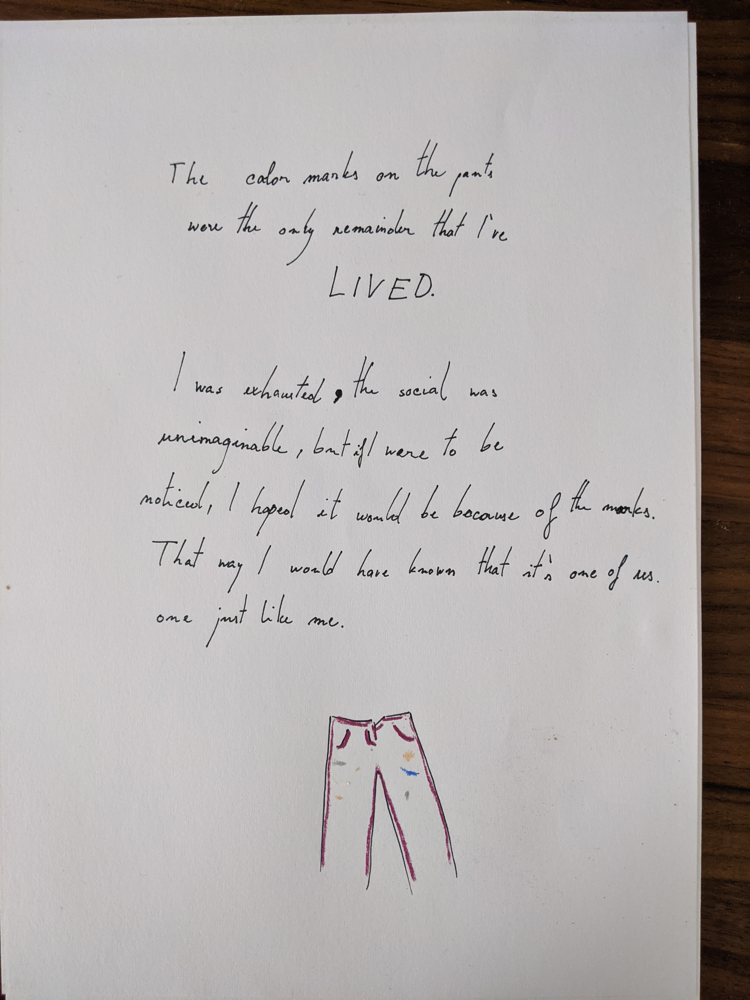
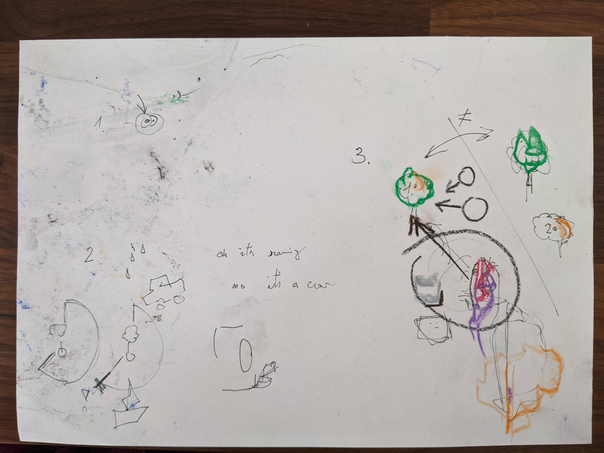
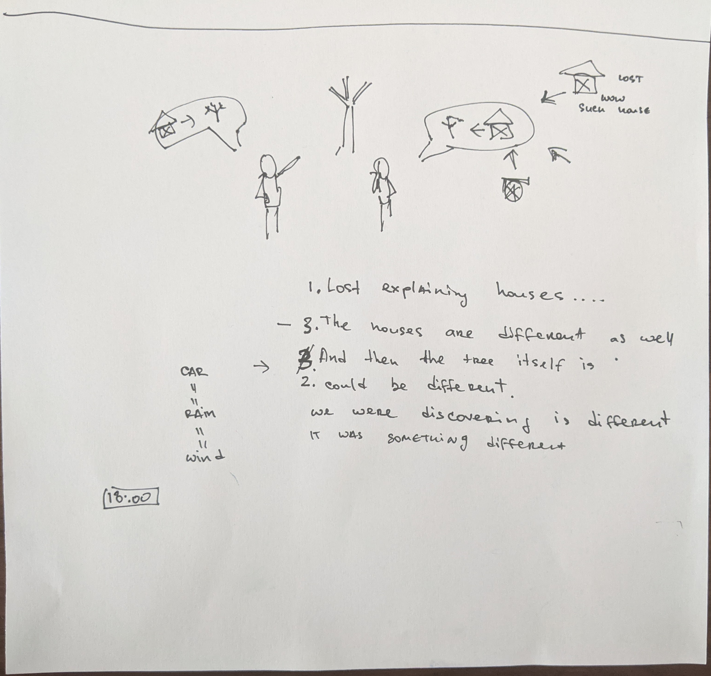
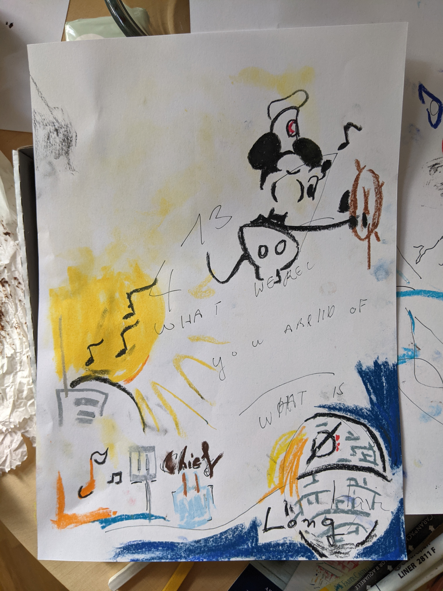
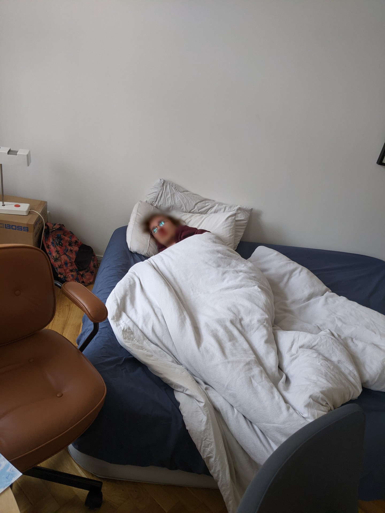
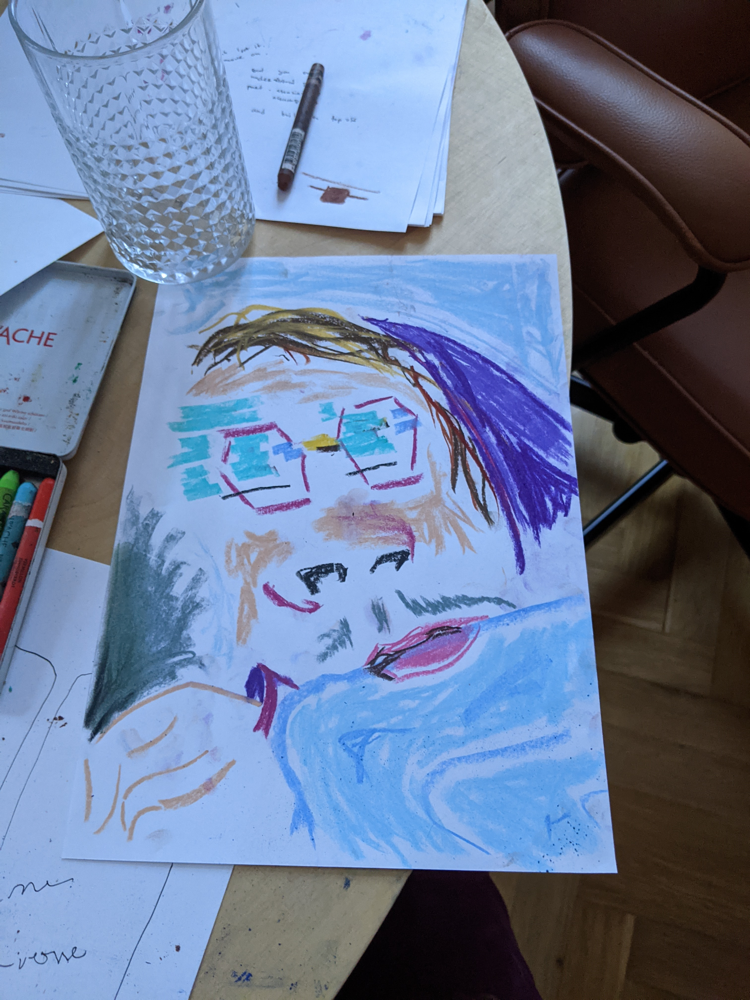
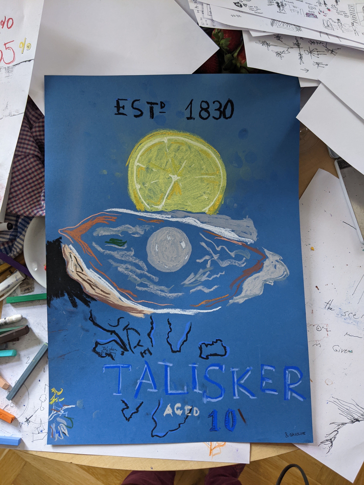
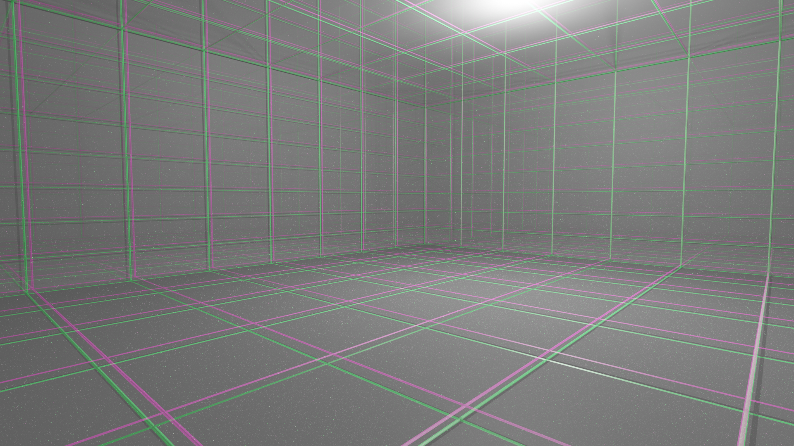
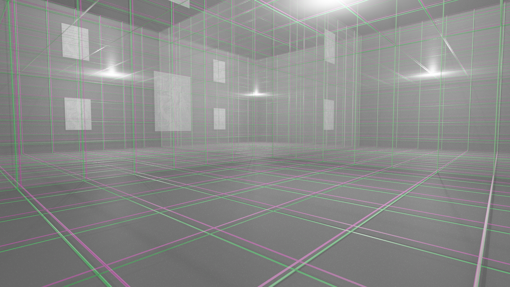
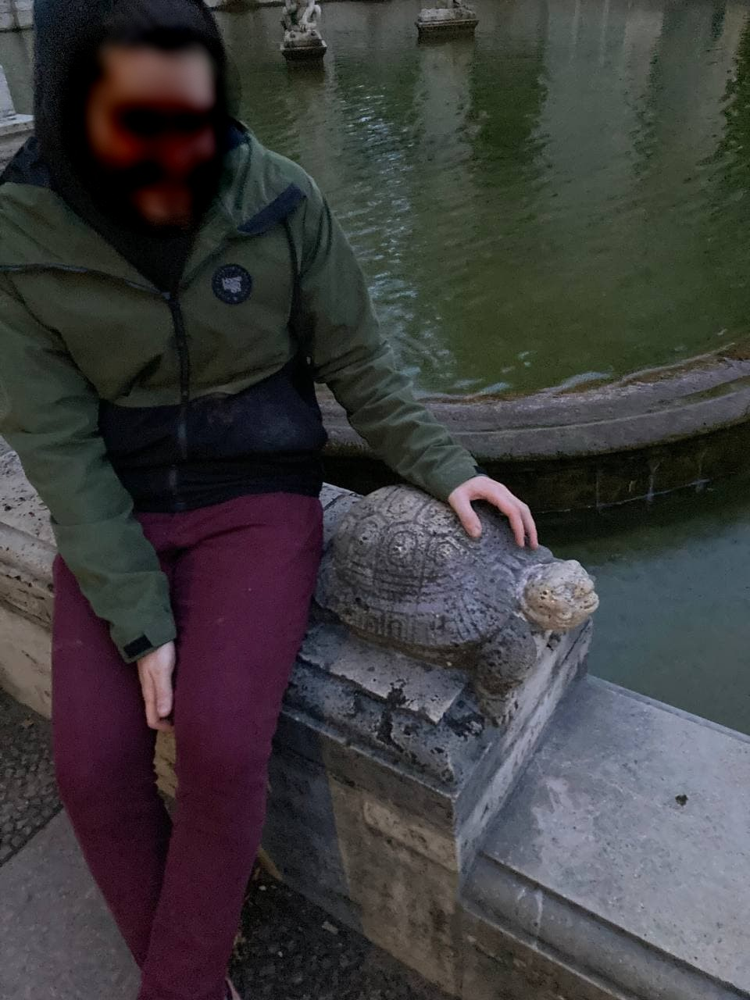

The color marks on the pants were the only remainder that I've LIVED.
I was exhausted, the social was unimaginable, but if I were to be noticed, I hoped it would be because of the marks.
That way I would have known that it's one of us.
one just like me.

Today I wanted layer 3, like the first time. I've had enough art, I want to see the fabric of existence.
So we decided to take 1.5 papers each.
It was too much for two people. Layer 3 doesn't make sense without a trip-sitter. Lesson learned.
We couldn't communicate. Or to be more precise I couldn't follow K's sentences. It was connected to languages but it took us hours to figure out what the problem was.
I was really sorry about that. I wanted to respect his experience as well. But whenever he would finally say something I could not follow, and when I tried to explain why, I would get lost in the thought. There were just too many associations involved in the cause.
At some point I managed to reference my favorite video of all time - The Artist is Absent: Davey Wreden and The Beginner's Guide". In it, the process of communication is explained. I got across the idea of two trees being drawn from different "ingredients" and that this is somehow related to why I can't understand. I could not believe he could follow. But time went on and at some point he started listing out the fallacies of communication that we're encountering. He was numbering them just like Aristotle numbered his syllogisms. How is he proccessing things so much better than I am?!
Fallacy Nr. 1
Either the speaker or the listener gets lost in one of the ingredients.
When describing the tree you need to say wood. But the moment you say wood the brain starts associating a lot of things to wood.
"Wood like you experienced in a wooden cottage.". And either of the people can start having different associations and within a few words you're so behind that you forgot there's a tree that is being described.
A special case of this fallacy is when the sound to pronounce a word could have two different interpretations. "I'm getting food vibes" or "I'm getting food wipes". Your brain is distracted so it hears even less of the words - it's like French - you just have to pick one and hope that it was right. If it wasn't nothing will make sense. But when you try to understand why, the problem space is too big and you'll forget what you're investigating.
Basically if any of the ingredients takes you too long because it exploded in your face, you cannot follow (or a build) a sentence.
"Linguistics" was a really hard ingredient in explaining why I can't communicate.
Fallacy Nr. 2
You are both discussing about this tree and suddenly the other person mentions an ingredient that doesn't fit a tree, and you realize that they were describing a big wooden ship.
A: "It's raining outside"
B: "It's just a car"
A: "no water"
B: "yes water"
A: "what?!"
B wanted to explain that the sound of water that the other person heard was just the sound of the water underneath the tires of a car. But A had no way to associate these ingredients (car? rain?!). We were both drawing something with some ingredients that the other was missing and thus we didn't realize what other things could fit those ingredients and not be the tree that we're describing.
This will typically happen deep in a conversation. You're not gonna recover.
Fallacy Nr. 3
You start describing an ingredient but the other person prematurely accepts the first association they have even though what you were trying to use as an ingredient is something completely different than what they ended up putting into the tree. Your thought could often be much deeper.
Fallacy 3 often leads to fallacy Nr. 2.
The next day he linked a video about Wittgenstein, the two videos were the key to our trouble.


Layer 3
This time I had the experince of the first time. I was existence. Just a stream of thoughts.
I didn't know who/what I am. Where do I start or end. When trying to communicate something to K, I would realize that I don't know who I am,
and that K is the same as me. So I was trying to push information through this really complicated channel of communication when he should have access to the same information anyway. The whole process seemed pointless. At some point I saw just points in an infinite void. I couldn't reason about anything. The best representation of what I saw is the art of MIRAI MIZUE, specificaly the pieces of animation where some complex thing like a person starts decomposing into blobs of colors and those blobs then dissolve into nothingness. I just gave up. I reached peak craziness. I just hoped it would get better over time. Even though I would not know whose time would pass, or to which body I should return to. My existence on earth was long forgotten. Once "back" I would still feel responsible of the experience of everyone as it's my apartment, but it was hard to justify given that I didn't understand how I'm more entitled to this specific body or apartment than K is.
The moment I gave up. There was nothing but a feeling of letting people down. While getting there I got this feeling of not being able to be sure that my apartment is now not a room full of junkies, forever. The expectations of your close ones that told you take care of yourselves, but you failed. Even at a point where nothing makes sense anymore, a society that you have long forgotten still imposes its norms on you.
A later day I found a note that said Lost purpose in the multiverse. I remember writing it. I know I felt the same senselessness of our world in this Layer 2 (and above) world. It was scary. If I wouldn't enjoy this anymore, what was there left? But I couldn't remember what made me write it. At what point did I lost purpose? Anyway, the rest of the day was full of it, so it probably doesn't matter.
Coming back to reality
Fortunately, even when I accepted that today's experience was just a lesson on how to use the drug and that nothing would make sense for the rest of the day and that communication would just result in frustration, once I started sobering up we had an amazing afternoon.
Formulating the fallacies was really rewarding and calming. I also explained how coming back to my body felt like the experience an expensive actor has when they come on set for that one scene the movie could afford them for and the assistant starts reading a summary of the character. You're a 27-year-old male, privileged appartment full of all hobby utensils. You work for the system. All your belongings have the color you wanted them to have.
I then started to draw.
We listened to "Big Chief - Remastered" by Professor Longhair. I said the song is a clear expression of preparing a breakfast. K didn't agree. I drew an orange egg and started explaining how the song would definitely be used in a movie to show the morning routine of a succsefull man already dressed in his suit preparing breakfast for his family. The movie would cut to him walking with a Startbucks coffee to his office. K suggested "someone like the dude in American Psycho!". I knew he meant Bale, but I already knew that I'm describing Steve Carell in Evan Almighty. There was definitely a pinch of Jon Favreau preparing his grilled sandwich in there, but I couldn't tell if my memory of it was real. Googling videos of all this was really hard. Understanding which of your associations will also make sense to the search algorithms was often impossible.
At a later time I would notice the orange egg was drawn on a circle and the circle contained an "empty set" symbol, and the two looked like a death star from StarWars. I had to complete it. At this point we started playing the song again, and so I drew the chief in as well and the radio of the morning routine of a business man. It had to be a single-purpose radio. And that whistle in the song. I somehow had to capture the whistle - the notes were not enough. K blurted out "Mickey Mouse". I knew what he meant. We managed to find the animation of Mickey driving a boat while whistling. "This is hard, I can't draw it", "The cheeks are just parenthesis". It was a masterpiece in the end.

On one of my visits to the toilet I hugely overestimated myself and decided to pee standing. I was actually managing pretty well, but I started noticing small droplets from splashes soaking into the floor tiles. It was at this moment that I felt immense empathy for cats. I immediately started restoring the original state of the room such that there would be no trace of me using it. It was really important at that moment when I was only slowly getting accustomed to my new identity to leave this "shared" space free of traces of this individual. Whatever else would decide to use the toiled should have the experience of a pristine canvas.
K fell asleep
At some point (early afternoon) K fell asleep. When he woke up. I wanted to capture the "S" shape his body was forming with the blanket.

I wanted to capture the glasses and their light first. Suddenly I realized they covered most of the paper. There's not gonna be space for the body. It's worth a try anway, and so I was happy with the arc of blue under his lips.

Food
We got a lot of fruit this time. We also bought two brownies again. The experience of removing the sealed foil from the raspberry box was orgasmic. At first I wanted to enact a funny sex scene, but by the end I almost came. Only at the end I realized how awkward it was. The tension, the expectation, and the surprise of when the packaging finally gives in. K would later offer me the honor of opening another box given how much I enjoyed the raspberries (we actually ended up throwing all of them away since there was mold on them).
The brownie was incredible, as it is every time. I smelled the fork and couldn't believe how much flavor and richness there was. It was a complete culinary experience. I couldn't put it in my mouth. I'm full of it, it was too much! To which K pointed out that the piece that I had on the fork was my first one.
I wanted to cut a pomgrenade open and when it started bleeding I realized I couldn't tell if it was it or me. It was then that I realized that the feeling you have when you have an open wound, is just of the brain processing inputs which it doesn't know. It's a lot of new random signals with no meaning attached. That's why you have to first realize that it's bad and only then it actually hurts. I could see a completely grinded hand. Feel the buzzing signals coming to my brain.
I did not cut myself. But we agreed the knife was not a good idea so we put it away.
Talisker
Late into the evening I couldn't stop appreciating how the magic potion that I prepared in the morning, kept surprising me with its smell and taste throughout the day (I mixed mint, pomgrenade and brown sugar in a mortar). I realized I should try other smells. I took my parfumes and hair oils, then spices. Suddenly I saw the bottles of whiskey and I wondered. That Talisker always had a really fucking weird taste. I want to experience it again. So I open it and the experience is slower than sober. Now I want to taste it but I know alcohol is not a good idea. So I tap the bottle with my forearm and flip it upside down. I taste the drops and the words to describe it are immediately in my mouth - "Oysters! and gasoline". The flavor is an oyster one but just grey. A universe with the texture of an oyster but only grey color. I need to capture it.

If this ever gets famous, Talisker owns me money XD I said just when I was finishing it.
Wireframe room
At some point I looked at my wall and I could see the structure of the room in wireframe. It was white environment with a green/pink mesh. The room would repeat into the distance.


On the wall there's a print of Mucha's add for JOB cigarettes. It's a famous poster with a beautiful lady enjoying a cigarette. A green JOB title is on the top and her golden hair is doing a dynamic upward flip. I was not interested in the content at that moment.
But I could see it repeat at random places in the distance. It was just its wireframe as well, but definitely recognizable (the mesh would draw the countours of the lady as well). It was the only way for me to know that the mesh that I saw "behind" my wall was just a repetition of the same room I was in.
I later tried to describe it in terms of a knot that I have in the fabric of a pair of orange pants. If the knot was not there, I would have no point of reference. But if you see just one knot and then 10 kilometers of space then you can be sure that you're looking at something at least 10 kilomers long. I never understood how that single knot made its way onto those pants.
After I recreated the vision in Blender, K admitted he saw the same thing, but the green was more blue. He might have been right. What I created was too close to what I saw and it immediately started overwriting the memory.
PS: Now that I look at those renderings I realize that the painting would occur way less often. I noticed about 2 replicas.
Märchenbrunnen
Late in the evening we decided to go out. A few weeks ago I proposed a good place for a trip. K wanted to go there. It's really far but anyways.
On the way we found some psychadelic art exposed behind a window - it was a 3D face of a person or maybe a lion. I immediately got hooked. K had to force me to leave. Maybe they have a camera that just captures excited faces of high people and it posts it somewhere. It's like a trap for druggies!
Distances were distorted as usual. We would walk for long and then still see the same church behind us. We finally got to the park. Nature was beautiful. K needed a photo for his mother. Did I tell you I'm a great photographer on L? and indeed the flowers created a lot of patterns around him. We walked in a path and the softness of the terrain was new. I would kick the dirt and complain of how the previous cloud of dirt had more flavor, just like better drawing utensils. At some point we found a huge metal sphere sank in the sand. I wondered if moving it would move a cursor somewhere. K corrected me that it would maybe move the world. It was really heavy, we would not move it. Was there a second half of the ball underneath the sand?
We were getting closer to the destination when we had to go down a small hill covered in grass. I have an idea and I need you to tell me it's a bad one I knew exactly what he had in mind. He passed me his backpack and started rolling down the hill. He did not roll very effectively, but I laughed out loud the whole time, it was the laughter you have when you date someone and you start experiencing life again in a new way. You are not a seal XD, our bodies are too complex! Too many limbs that stick out. I said when he looked at me disappointed. Only then I realized there was a group of maybe four twenty-year olds watching us from nearby.
We struggled a bit with the graph theory problem that the designers of the pathways in the park prepared for us. Euler would have been proud. I felt like I deserved a second compsci degree at the end.
But there it was, we found the fountain. I really liked that all of it is hidden behind a wall. We did not know what would await us. Are there gonna be people? It was very calm. I sat down by the fountain, and immediately started scratching the back of a turtle with the face of Budha. The calcers on my fingers from guitar were really fitting the coarseness of the rock. I felt like a pokemon trainer. I mentioned how the trainers always somehow fit the type of pokemon they train. K picked the duck that was sitting in the fountain.

The days after
Berlin is beautiful on drugs.
people dressed in all colors
On the Monday after. I realized I perceive different parts of content than usual. Even in stories. Just like when we watched the Grand Budapest Hotel and for the first time I understood the story (cause I couldn't ever before be bothered to reason about it) I would watch other videos and catch different parts of them. It's like your brain ignores a lot of content in order to parse a sentence (probably in order to avoid Fallacy Nr. 1). It's like when your eyes get lazy and try to skim a page instead of reading it entire, because you've read enough content in your life that you can guess what it's supposed to be about just from a few words. And after saturday my brain unlearned to ignore those things. This was the most noticable with the movie since I typically ignore the story in a movie and just focus on the characters. I would often not watch the ending as the character is already fully presented at that point.
It's the Tuesday after now. The effects have mostly vanished, even though my walk to the supermarket for ice-cream was really entertaining yesterday. I could enjoy walking just like a child does. The path is not just the shortest way to get from point A to point B, but a game. A series of challenges and puzzles and things to see. There is so much entropy on the sidewalk. And the activity of walking itself. Did you know you can walk fast? Or even faster. Why do we usually walk so slow, when we can really PUSH our legs and feel the wind in our hair. Spotify has me figured out at this point. Most of my discover weekly is LSD related or obviously LSD fueled. I wonder what gave it away. I stopped on the cross-road in front of the super-market and the song "Monolith - 2003 Remaster" by T.Rex was on. The energy in it just HAD to be expressed. The lights would just not turn green, so I was stuck there dancing by the pole.
This morning I woke up and was happy that I still get a lot of dreams. The sleep is really rewarding. I remembered some people would hack creativity by writing just as they woke up. It made so much sense now. I wish they knew the potential our brain really has. Yesterday on a call with Sarah I remembered how in school our literature teacher would let the class play "associations". The person in front of you would say a word and you had to blurt out the first association you had - this would form a chain across the class. It was some kind of exercise. How incredibly ridiculous it feels now. People would never make a sport out of it if they knew how natural it is for our brain to associate things.
Today I remembered of how I used to find something really cool - culturally divergent. And I would decide to consume that content without rest for as long as it didn't get boring. At that point I would know my brain accepted it as normal, it was part of me at that point. I did this with the 2016 Kenzo commercial. It was just too good. I would beam it into my brain on loop for hours. This being exciting is unacceptable! I MUST make it my reality. And eventually it would, but it was hidden inside, silenced by the environment. I would hate when this would happen with music. I remember constantly listening to Keaton Henson at that same time (when I was in Boston), but I don't remember playing it recently. "Maggot Brain" is probably the only song that has stood the test of time. Maybe I'm cautious with it. But it's too precious to loose it. I know I would not find a second masterpiece like this.